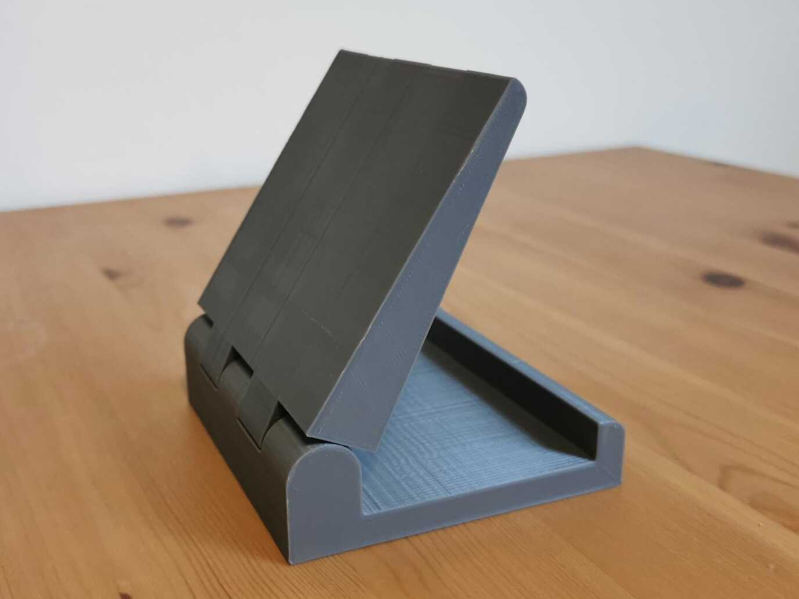
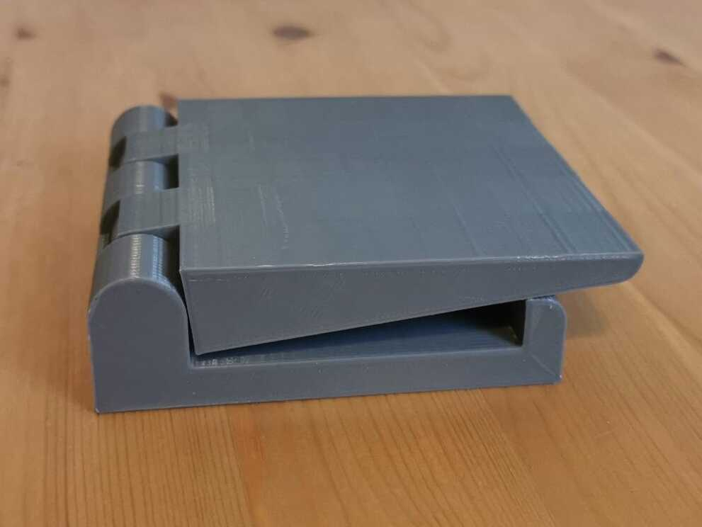
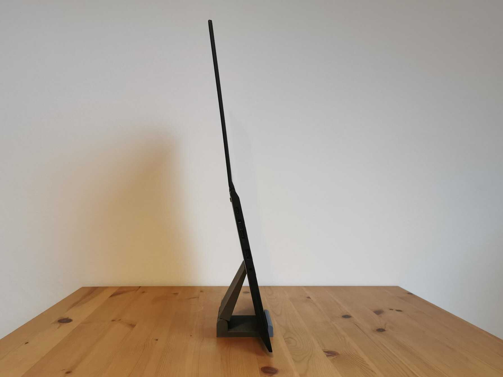
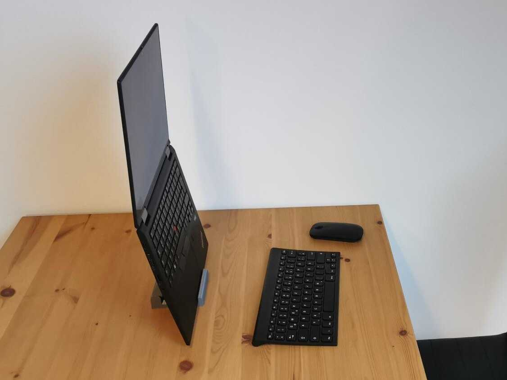

Sitting like a cashew in front of your laptop is bad for you back. That's why I 3d-printed this laptop stand:




It's printed in one piece and foldable so it takes very little space in your bag. The laptop screen is now almost on eye level. Here is the stl-file if you are interested: laptopStand.stl (only works for thin laptops with lids that open 180 Deg.)